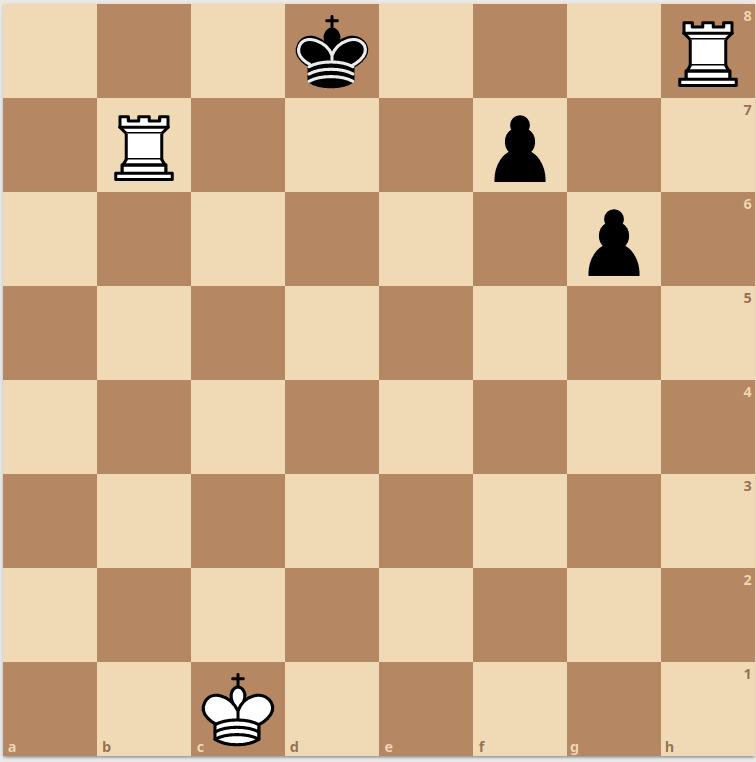
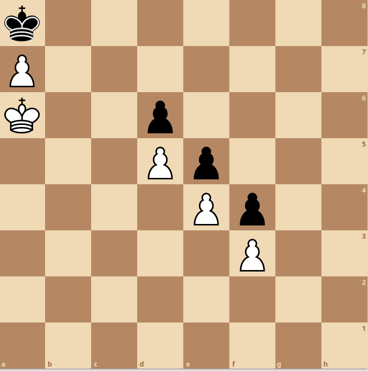

1. Quantos quadrados tem um tabuleiro de xadrez?
2. De que país é o xadrez
a) Portugal
c) Estados Unidos
b) India
d) França
3. Quem é o melhor jogador do mundo
a) Fabiano Caruana
c) Weslei So
b) Magnus Carlsen
d) Hikaru Nakamura
4. Quem começa a jogar primeiro?
a) Brancas
c) Pretas
b) Atira-se uma moeda ao ar
d) O árbitro escolhe quem joga
5. Em que país decorreu o famoso jogo da ópera
a) Suiça
c) Portugal
b) Inglaterra
d) Framça
6. Nesta posição são Pretas a jogar, a posição está:

a) Perdida, é cheque mate
b) Empatada, porque as pretas não tem lances possíveis
7. Nesta posição são Pretas a jogar, a posição está:

a) Perdida, é cheque mate
b) Empatada, porque as pretas não tem lances possíveis
8. Nesta posição são Pretas a jogar, a posição está:

a) Perdida, é cheque mate
b) Empatada, porque as pretas não tem lances possíveis
9. Qual é única peça que pode saltar por cima de outras
a) Cavalo
c) Bispo
b) Rainha
d) Torre
10. Com quantos peões se começa o jogo?
11. O que fazemos quando o adversário faz um lance ilegal?
a) Continuar o jogo como não tivesse acontecido nada
c) Chamar o árbitro
b) Desistir do jogo
d)
12. Qual é a peça mais poderosa?
a) Peão
c) Rainha
b) Cavalo
d) Rei
13. Quais são as peças que se podem mover na diagonal quaisqueres distancias
a) Bispo
c) Rei
b) Cavalo
d) Peão
14. O meu rei mexeu, posso fazer roque? Porque?
15. Em quantos lances dá para dar cheque mate com o mate à pastor
15. Em quantos lances dá para dar cheque mate com o mate à pastor
16. O que é um afogamento?
a) Uma forma de ganhar o jogo rapidamente
c) Um movimento arriscado
b) Um empate que ocorre quando um jogador não tem mais movimentos legais